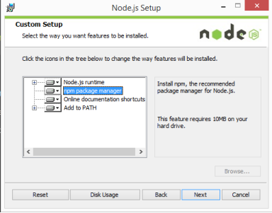
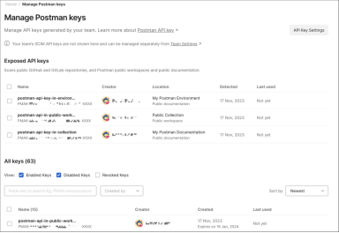

目录
01. 全面认识OpenClaw - 什么是OpenClaw？它能做什么？
02. 安装前准备工作 - 硬件要求、软件环境、账号准备
03. Windows系统安装 - NVM安装、Node.js配置、一键部署
04. Mac系统安装 - Homebrew安装、终端配置
05. Linux系统安装 - Ubuntu/CentOS部署
06. 配置AI大模型 - 智谱AI、DeepSeek模型接入
07. 配置通信渠道 - 飞书、Telegram、WhatsApp
08. 进阶使用技巧 - Skills插件、浏览器自动化、安全设置
09. 常见问题解答 - 安装问题、配置问题、使用问题
10. 总结与展望 - 核心优势、未来发展
01 全面认识OpenClaw
1.1 什么是OpenClaw？
OpenClaw （曾用名Clawdbot、Moltbot）是一款开源的个人AI智能体（Personal AI Agent）。它能够通过你已经在使用的各种通信渠道回复消息，包括：
Telegram | WhatsApp | 飞书 | 钉钉 | Discord | Slack | iMessage
与传统的AI聊天机器人不同，OpenClaw运行在你自己的设备上，具备真正的"动手"能力：
本地部署：所有数据存储在本地，隐私零泄露
高速响应：本地运行，无需等待云端响应
7×24待命：随时在线，随时响应你的指令
系统级执行：可以读写文件、执行命令、操作浏览器
1.2 OpenClaw能做什么？
文件管理：自动整理文件夹、批量重命名、文件分类归档
开发工作：写代码、调试程序、部署项目、监控服务器
生活助手：设置提醒、查询信息、管理日程
浏览器控制：自动填表、网页截图、数据抓取
数据处理：Excel整理、PDF解析、邮件自动处理
1.3 OpenClaw的发展历程
OpenClaw原名Clawdbot，后来更名为Moltbot，如今正式定名为OpenClaw。2026年1月25日，项目在GitHub上发布后短时间内便获得AI社区高度关注，GitHub星标突破4万+。
它获得关注的核心原因在于：
✅ 自动实现高自由度的智能化应用
✅ 完全文本对话形式就能完成复杂功能
✅ 部署相对简单快速，对本地设备要求不高
✅ 支持集成到飞书、钉钉等移动应用中
02 安装前准备工作
2.1 硬件配置要求
在开始安装OpenClaw之前，需要确保你的设备满足一定的硬件要求：
配置项 | 最低要求 | 推荐配置 | 说明 |
CPU | 4核64位处理器 | 6核及以上 | Intel i5/AMD Ryzen 5+ |
内存 | 8GB | 16GB+ | 本地运行大模型需16GB+ |
存储 | 10GB可用空间 | 20GB+ | 存储依赖和日志 |
网络 | 稳定连接 | 100Mbps+ | 下载依赖和调用API |
2.2 软件环境要求
Node.js：版本要求≥22.0.0
Git：必选项，用于克隆代码
Docker（推荐）：版本≥20.10.0
NVM：Node.js版本管理器（推荐）
2.3 操作系统要求
Windows：Windows 10 2004+ 或 Windows 11（64位），需启用WSL2
Mac：macOS 12+，原生支持，无需额外配置
Linux：Debian/Ubuntu 20.04+，兼容性最佳（推荐）
2.4 关键账号准备
使用OpenClaw前，需要准备以下账号：
AI模型 智谱AI / DeepSeek / Kimi：提供AI推理能力（智谱AI / DeepSeek / Kimi）
通信平台飞书 / Telegram / WhatsApp：与AI交互的渠道（飞书 / Telegram / WhatsApp）
⚠️ 重要提醒：由于此类工具涉及自动化操作和环境配置，如果你的电脑存有重要的商业/资产或个人隐私信息，强烈建议弄一台干净的备用设备，或者直接租用一个云端虚拟机（VPS）来运行。
03 Windows系统安装详解
3.1 安装NVM和Node.js
Step 1：下载NVM for Windows
访问：https://github.com/coreybutler/nvm-windows/releases
下载nvm-setup.exe 并安装
Step 2：以管理员权限打开PowerShell
▪ 按 Win + S 搜索 PowerShell
▪ 鼠标右键 → 以管理员身份运行
Step 3：安装Node.js 22版本
# 安装指令
nvm install 22
# 使用指令
nvm use 22.22.0

3.2 一键安装OpenClaw
在管理员PowerShell中运行以下命令：
iwr -useb https://openclaw.ai/install.ps1 | iex
↑ 一键安装命令
如果遇到执行策略报错，运行：
Set-ExecutionPolicy -ExecutionPolicy RemoteSigned -Scope CurrentUser
3.3 初始化配置
安装完成后，重新打开PowerShell执行初始化向导：
openclaw onboard --flow quickstart
配置步骤：
1️⃣ 风险提示：选择 "Yes" 继续
2️⃣ 选择模型：推荐智谱AI或Kimi
3️⃣ 输入API Key：粘贴平台获取的Key
4️⃣ 选择通信方式：Telegram或飞书
5️⃣ 完成配置
✅ 配置完成！
3.4 启动网关
启动网关后，会自动新开一个PowerShell窗口，**都不要关闭**
浏览器会自动打开控制台，也可直接访问：http://127.0.0.1:18789/
04 Mac系统安装详解
4.1 安装Node.js
检查Node.js版本：
node -v
如未安装，前往 nodejs.org 下载22.x版本
4.2 安装OpenClaw
在终端中运行：
curl -fsSL https://molt.bot/install.sh | bash
4.3 权限配置
Mac系统需要为终端授予权限：
打开系统偏好设置→ 安全性与隐私 → 隐私
勾选"完全磁盘访问"和"信息"
4.4 初始化
openclaw onboard --install-daemon
05 Linux系统安装详解
5.1 环境准备
Linux是OpenClaw最推荐的部署平台。更新系统并安装依赖：
sudo apt update
sudo apt install -y curl git
5.2 安装NVM和Node.js
curl -o- https://raw.githubusercontent.com/nvm-sh/nvm/v0.39.0/install.sh | bash
nvm install 22
nvm use 22
5.3 安装OpenClaw
curl -fsSL https://openclaw.ai/install.sh | bash
openclaw onboard --install-daemon
06 配置AI大模型
6.1 为什么需要配置模型
模型就像是OpenClaw的"大脑"，没有配置模型的OpenClaw只是一个空壳，无法完成智能任务。
6.2 配置智谱AI（推荐）
Step 1：访问智谱AI开放平台
https://open.bigmodel.cn
Step 2：创建API Key
控制台→ API管理 → 创建新Key
Step 3：配置到OpenClaw
openclaw config
按提示填写API Key
6.3 配置DeepSeek
Step 1：访问DeepSeek开放平台
https://platform.deepseek.com
Step 2：获取API Key
Step 3：在配置文件中添加：
models:
providers:
deepseek:
baseUrl: "https://api.deepseek.com/v1"
apiKey: "你的API Key"

07 配置通信渠道
7.1 支持的通信平台
OpenClaw支持多种通信平台：
Telegram | WhatsApp | 飞书 | 钉钉 | Discord | Slack | iMessage
7.2 配置飞书（推荐国内用户）
Step 1：创建飞书应用
访问 https://open.feishu.cn/
创建企业自建应用
Step 2：获取凭证
获取 App ID 和 App Secret
Step 3：添加机器人
应用能力→ 添加机器人
Step 4：配置权限
添加"接收消息"等必要权限
Step 5：发布版本
版本管理→ 创建版本 → 发布
7.3 配置Telegram
Step 1：创建机器人
在Telegram搜索 @BotFather
发送 /newbot 创建新机器人
Step 2：获取Token
BotFather会返回API Token
Step 3：配置到OpenClaw
openclaw config
选择Telegram并填写Token
08 进阶使用技巧
8.1 使用Skills扩展功能
OpenClaw内置53种可选技能，其中25种已打包为即插即用模块。
常用命令：
• 查看技能列表：openclaw skills list
• 启用技能：openclaw skills enable file-organizer
• 禁用技能：openclaw skills disable web-scraper
8.2 浏览器自动化
Step 1：确保Chrome/Edge已更新至最新稳定版
Step 2：安装浏览器中继
openclaw plugins install browser-relay
Step 3：安装扩展
浏览器地址栏输入：chrome://extensions
开启"开发者模式"
点击"加载已解压的扩展程序"
选择OpenClaw输出的扩展路径
8.3 指令优化技巧
有效的指令结构：明确动作 + 具体对象 + 可执行上下文
✅ 正确示例：
"把Downloads文件夹里上周的PDF文件整理到对应月份子文件夹中"
❌ 无效示例：
"帮我整理文件"（缺少具体对象）
8.4 安全设置
⚠️ 安全建议：
• 不要在主力电脑上处理重要数据
• 使用独立的虚拟机或云服务器
• 为AI设置工作目录范围
• 定期检查运行日志
09 常见问题解答
9.1 安装问题
Q：安装时提示权限不足？
A：Windows用户请以管理员身份运行PowerShell。Mac和Linux用户请使用sudo权限。
Q：安装后命令找不到？
A：检查Node.js全局安装路径是否添加到环境变量。
Q：nvm下载失败？
A：可手动去nodejs.org下载安装包。
9.2 配置问题
Q：API Key获取失败？
A：检查网络。智谱AI和DeepSeek无需翻墙。
Q：模型响应很慢？
A：检查网络延迟，或切换到国内模型。
9.3 使用问题
Q：AI不执行命令？
A：检查指令格式。确保AI模型正常加载。
Q：飞书收不到消息？
A：检查是否发布版本。检查权限配置。
10 总结与展望
10.1 核心优势
OpenClaw作为开源个人AI助手，具有以下核心优势：
本地部署 - 隐私安全
全渠道交互 - 使用便捷
系统级执行 - 功能强大
社区活跃 - 持续更新
10.2 未来展望
AI Agent领域正在快速发展，OpenClaw作为开源社区的热门项目，未来可期。按照本教程步骤，你可以在一个小时内完成部署，开始享受AI助手带来的便利！